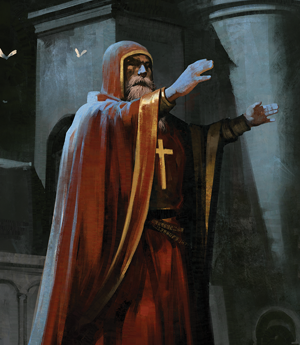

Classes > Priests > Bishop
Non-Evil only. A servant and shepherd of the upper planes fully dedicated to their mission of healing the sick no matter their creed and routing the wicked. They all speak Common and Elven.
The highest echelon of organized clergy is a rare and privileged position attained only by the most devoted to the order. At such a rank, a Priest transcends their position of a mere bookkeeper within the temples of the world and becomes a politically important asset. A Priest who shows an affinity for casting miracles is dubbed a Bishop, and is often called on to accompany military detachments and envoys to safeguard them and aid them on their task, but is also often sent on holy missions to cleanse dangerous areas of the world or retrieve critical artifacts. See the end of this info box for a list of upper deities.
Level 1: Bishops may turn the wicked by waving their holy icon at a creature of opposite alignment, forcing it to roll d20 + its level versus DC 10 + the Bishop's WIS modifier or recoil in fear and lose a turn. This ability can target one creature per level.
Level 3: Bishops may swing their holy icon to smite the wicked for Ld6 Holy damage where L is the level of the Bishop, once daily per 3 levels.
Level 5: Bishops may tightly grip their holy icon to shackle heretics once per day per 6 levels. This act drops the AGI of all opposite archetype creatures within sight to 0, and requires the Bishop to maintain their focus. A victim may try to resist by rolling d20 versus DC 10 + the Bishop's WIS modifier.
Level 10: Bishops may spend multiple charges of their smite at once to target multiple visible creatures, up to once per target.
Level 15: Bishops may pray for a Divine Intervention, which innately casts a specific planar effect without consuming a spell slot or needing reagents, but halves their CON for a while or until their next level up. CON lost this way returns at a rate of 1 point per day.
On character creation, a Bishop may be a cleric of one of the following forces:
- Cleric of Dawn: Called Pastor. A saintly worshiper of the lord of the sun, beholden to the Plane of Light and Faith ruled by Archangel Ein. Their opposed archetype is demons and aberrations, and their Divine Intervention is a group version of the miracle raise dead which reawakens the targets at half stats rather than 1 CON.
- Cleric of Justice: Called Judge. Lawful only. A stern legislator in service of the holy Tribunal, dedicated to the total eradication of all oathbreakers and chaos creatures in the world. Their opposed archetype is any sentient chaotic neutral or chaotic evil being, and their Divine Intervention is the spell greater imprisonment.
- Cleric of the Seas: Called Tidepriest. A servant of the goddess of rain and fortune who calls on the safety of sailors and fishermen, as well as wealth and abundance for the good. Their opposed archetype is fire creatures and devils, and their Divine Intervention is either the spell tsunami or a mystical rain that mimics the effect of complete healing.
- Cleric of the Wilds: Called Shaman. Chaotic only. A servant of the wild untamed sylvan plane who seeks to return the world to its feral ways. They get along with druids, though they do not cooperate, and would rather live in total isolation. Their opposed archetype is constructs, and their Divine Intervention is the spell mass polymorph.
|
Level |
Base Slots |
Bonuses |
Level |
Base Slots |
Bonuses |
|
1 |
2 |
Prayer, Turn the Wicked |
11 |
4/3/3/3/3/1 |
- |
|
2 |
3 |
- |
12 |
4/3/3/3/3/1 |
Archpriest, Feat |
|
3 |
4/2 |
Smite Unholy |
13 |
4/3/3/3/3/1/1 |
- |
|
4 |
4/3 |
Sense Curse, Feat |
14 |
4/3/3/3/3/1/1 |
- |
|
5 |
4/3/2 |
Shackle Aberration |
15 |
4/3/3/3/3/1/1/1 |
Divine Intervention |
|
6 |
4/3/3 |
- |
16 |
4/3/3/3/3/1/1/1 |
Prayer III, Feat |
|
7 |
4/3/3/1 |
- |
17 |
4/3/3/3/3/1/1/1/1 |
- |
|
8 |
4/3/3/2 |
Prayer II, Feat |
18 |
4/3/3/3/3/1/1/1/1 |
- |
|
9 |
4/3/3/3/1 |
- |
19 |
4/3/3/3/3/2/1/1/1 |
Feat |
|
10 |
4/3/3/3/2 |
Smite Unholy II |
20 |
4/3/3/3/3/2/2/1/1 |
- |